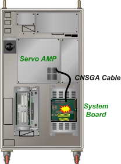

Previous error code: E0014 Safety switch (such as EM, OTR, and TS) instant contact
1.1.65.1. Outline
Due to an abnormality with the PWMON signal generation circuit of the system board, the servo AMP shuts off the motor power.
1.1.65.2. Causes and examine methods
|
(1) Check/replace the system board.. |
The PWMON signal is a signal that the system board generates after checking the operation state of the magnetic contactor. When the PWMON signal is on, servo ON will be possible in the servo AMP.
However, when there is a problem related to the circuit, preventing the normal generation of the PWMON signal, this error will occur. Replace the system board and then check if the problem occurs again.
(a) Hi5a-S controller

(b) Hi5a-N controller
Figure 1.180 Fault with the system board PWMON signal generation circuit